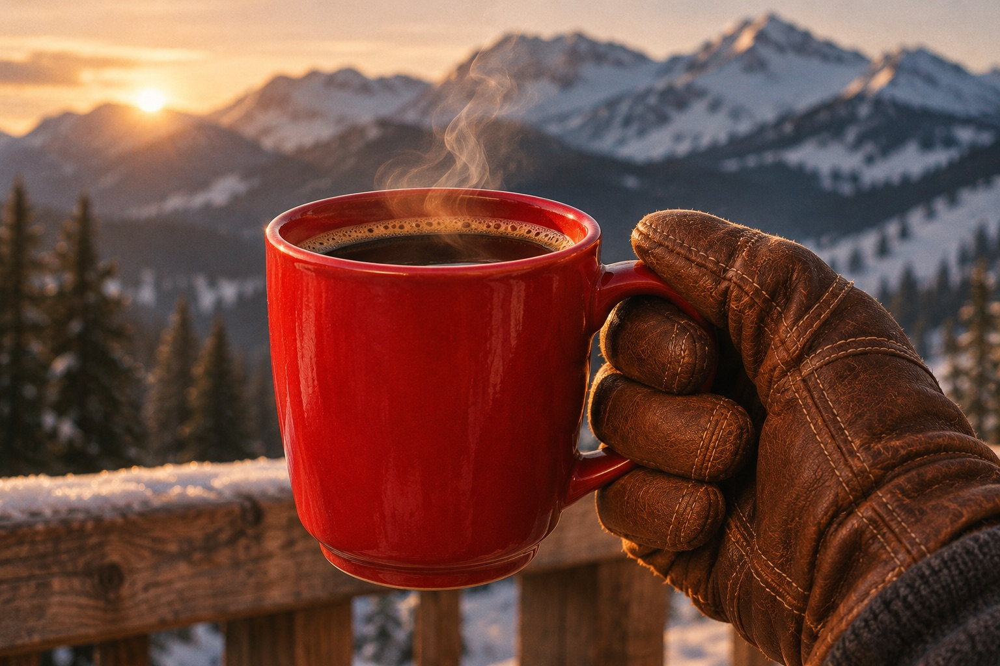

Una pausa
per al cafè.
Molt bona acollida de Nescafé a La Molina!
Un cap de setmana amb un flux constant de visitants, cues per tastar el cafè i comentaris molt positius sobre el gust i la practicitat del producte.
La crònica de l’activació de NESCAFÉ a La Molina i la resposta en línia al sorteig de Pirineu 365.
Llegir la crònica
Molt bona acollida de Nescafé a La Molina!
Un cap de setmana amb un flux constant de visitants, cues per tastar el cafè i comentaris molt positius sobre el gust i la practicitat del producte.
El recompte disponible recull les participacions registrades i les pàgines vistes fins divendres.
Consulta quines estacions tenen crònica o material visual en aquesta edició. Les xifres d’afluència, dies d’obertura, pistes i quilòmetres queden pendents del fitxer d’FGC.